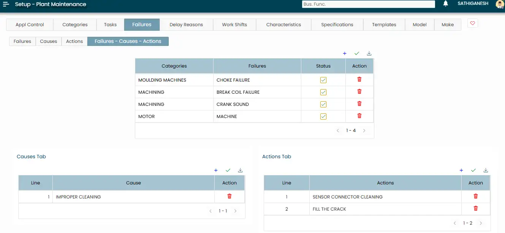

<div data-category="Plant Maintenance" data-title="Failure-Causes-Actions" data-updated="January 27, 2026" data-contributors="RoadmapIT" data-breadcrumb="Home,Plant Maintenance,Failure-Causes-Actions">
  <div class="page-content">
    <p>This screen is used to classify the failures that occur in the plant maintenance process and to link them with their respective categories. A category is a group of failures that share a common cause, effect, or solution. For example, a category could be electrical, mechanical, hydraulic, etc. A failure is a specific problem or malfunction that affects the equipment or components. For example, a failure could be a short circuit, a broken valve, a leak, etc.</p>
    <p>The category in this screen and the failures defined are associated with its corresponding category. The Category cannot be modified or deleted when the child record exists.</p>
    <h5>Navigation path:</h5>
    <p class="fs-6">Plant Maintenance \ Setup \ Setup-Plant Maintenance \ Failures \ Failure-Causes-Actions</p>
    
    <ul style="list-style-type: none; align-content: center">
      <li class="mouse-icon">
        Click to
        <i class="bi bi-plus fs-4 mx-2 text-primary"></i>
        Add.
      </li>
      <li class="mouse-icon">Enter/Select the Category, Description gets displayed automatically</li>
      <li class="mouse-icon">Enter/Select the Failure, Description gets displayed automatically</li>
      <li class="mouse-icon">Enter/Select the Cause, Description gets displayed automatically</li>
      <li class="mouse-icon">Enter/Select the Action, Description gets displayed automatically</li>
      <li class="mouse-icon">
        Click on
        <i class="bi bi-check-lg fs-4 mx-1 text-success"></i>
        button to save
      </li>
    </ul>
  </div>
</div>
